Home
| Search
| CTG
| RTL
| IDDE
| STL
Home
| Search
| CTG
| RTL
| IDDE
| STL
Last update Fri Apr 28 16:30:17 2006
|
Reference 1. Introducing Digital Mars C++ 2. Introducing the IDDE Part 2: Creating an Application with Digital Mars C++ 3. Starting a Project and Defining Workspaces 4. Generating an Application Framework 5. Defining Classes and Their Hierarchies 6. Editing Program Code 7. Adding Look and Feel with Resources 8. Testing an Application Part 3: Learning Digital Mars C++ by Example 9. Introduction to the Tutorial 10. Lesson 1: Create the DOS Application 11. Lesson 2: Generate an Application Framework 12. Lesson 3: Customize the Interface 13. Lesson 4: Add Messages with ClassExpress 14. Lesson 5: Add a Dialog Box with ClassExpress Part 4: More about Creating Programs 15. More about Projects and Workspaces 16. More about Project Build Settings 17. More about AppExpress 18. More about ClassExpress 19. Class Editor Reference 20. Hierarchy Editor Reference 21. Text Editor Reference 22. Using Version Control Part 5: More about Testing Programs 23. Controlling and Configuring the Debugger 24. Commands Available in Debugging Mode Part 6: About Managing Resources 25. ResourceStudio Resource Editor 26. Dialog Editor 27. Menu, Accelerator and String Table Editors 28. Bitmap, Cursor, Icon, and Font Editors 29. Version Information and Custom Resource Editors Part 7: Appendixes A. Expression Evaluation B. IDDE Settings and Command-Line Options C. Using NetBuild |
27. Menu, Accelerator and String Table EditorsThis ResourceStudio reference chapter contains details about the commands and options found in the Menu editor, the Accelerator Table editor and the String Table editor. For an introduction to ResourceStudio, see Chapter 7, "Adding Look and Feel with Resources."Menu EditorThe Menu editor (see Figure 27-1) is used to edit menu resources.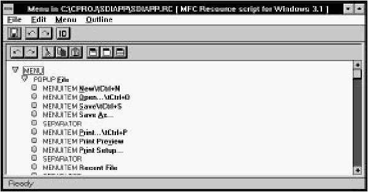 [Figure 27-1 The Menu editor The Menu editor displays the menu as a hierarchy of POPUPs, each of which may contain MENUITEMs, SEPARATORs, and other POPUPs. Items are added to the menu with commands in the Menu menu (or by clicking buttons in the toolbar), and are rearranged with commands in the Outline menu or by dragging with the mouse. The menu may be tested as a pull-down or pop-up menu at any time in the Test menu window, which is opened automatically when the Menu editor is started. For more information about using the Menu editor, see Chapter 7, "Adding Look and Feel with Resources." File menu commandsThe File menu (see Figure 27-2) contains commands to save the resource file, to edit resource IDs, and to perform other miscellaneous functions.
[Figure 27-2 Menu editor File menu SaveSaves the resource file. If the file is unnamed, this command executes Save As.Save AsOpens a Windows File Save As dialog box, which can be used to save the resource file under a new name.Edit Resource IDsOpens the Resource ID Browser dialog box, used to browse and modify resource IDs. For more information about managing resource IDs and using the Resource ID Browser dialog box, see "Managing Resource IDs," in Chapter 7, "Adding Look and Feel with Resources."ClassExpressRuns ClassExpress, passing the filename of the resource file as the project that ClassExpress should open. This command is only enabled if the Menu editor is running in the right pane of the Browser window.Close EditingCloses the Menu editor.Edit menu commandsThe Edit menu (see Figure 27-3) contains standard editing commands. You can undo operations, and can cut, copy, paste, and delete individual MENUITEMs or entire POPUPs.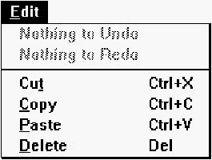 [Figure 27-3 Menu editor Edit menu UndoUndoes the last Menu editor operation.RedoRedoes the last Menu editor operation that was undone.CutCopies the selected item to the Clipboard, then deletes it from the menu.CopyCopies the selected item to the Clipboard.PasteCopies the item in the Clipboard into the menu.DeleteDeletes the selected item from the menu.Menu menu commandsThe Menu menu (see Figure 27-4) contains commands to add items to the menu. You can insert individual MENUITEMs, POPUPs, and SEPARATORs, and you can insert predefined File, Edit, and Help menus. An additional command lets you check for duplicate command IDs.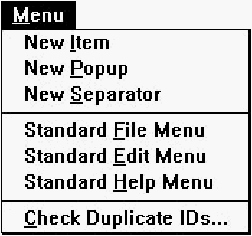 [Figure 27-4 Menu editor Menu menu Before adding a new item, select the item after which the new item should be inserted. New ItemAdds a new MENUITEM after the selected item.New PopupAdds a new POPUP after the selected item.New SeparatorAdds a new SEPARATOR after the selected item.Standard File MenuAdds a standard File menu after the selected item.Standard Edit MenuAdds a standard Edit menu after the selected item.Standard Help MenuAdds a standard Help menu after the selected item.Check Duplicate IDsChecks the menu for duplicate command IDs. If any two items have the same ID, the Resolve Duplicate IDs dialog box opens (see Figure 27-5).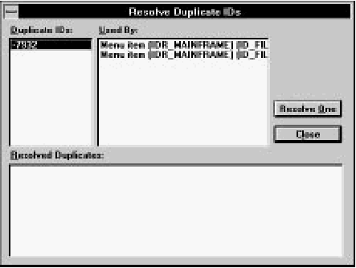 [Figure 27-5 Resolve Duplicate IDs dialog box To resolve duplicate IDs, first click on a number in the Duplicate IDs list. The Used By listbox displays the items that are using that ID. Click on Resolve One to automatically assign new IDs (with unique values) to the items. Outline menu commandsThe Outline menu (see Figure 27-6) is used to rearrange the menu. You can move items within their current hierarchical level, or you can promote or demote items from one level to another.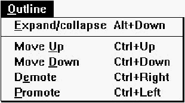 [Figure 27-6 Menu editor Outline menu Expand/CollapseExpands or collapses (depending on the present state) the view of the contents of a POPUP item. While a POPUP is collapsed, the items within a POPUP are not shown, and the triangle to the left of the POPUP points rightward. While expanded, the items within the POPUP are shown and the triangle points downward. You can also execute this command by clicking on the triangle next to the POPUP.Move UpExchanges the selected item with the previous item in the same level of the hierarchy.Move DownExchanges the selected item with the next item in the same level of the hierarchy.DemoteIf the previous item in the same level of the hierarchy is a POPUP, moves the selected item into the POPUP.PromoteIf the selected item is within a POPUP, moves the item out of the POPUP to the same hierarchical level as the POPUP.Toolbar commandsThe Menu editor toolbar (see Figure 27-7) provides quick access to frequently used menu commands.
[Figure 27-7 Menu editor toolbar
Popup item propertiesPOPUP item properties are shown in Figure 27-8.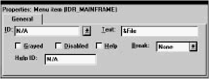 [Figure 27-8 Popup properties Menu item propertiesMENUITEMs and SEPARATORs have two pages of properties. The General properties are shown in Figure 27-9.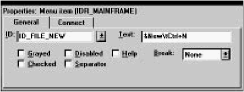 [Figure 27-9 Menu item / separator General properties A SEPARATOR would have the Separator box checked. The Connect properties (see Figure 27-10) only apply to MENUITEMs. 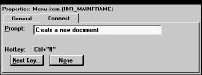 [Figure 27-10 Menu item Connect properties The Prompt textbox is used to set help text for the item. The Hotkey field displays the accelerator key combination associated with the item. For more information about how to create menus with help text and accelerators, see Chapter 7, "Adding Look and Feel with Resources." Accelerator Table EditorThe Accelerator Table editor (see Figure 27-11) is used to edit accelerator tables.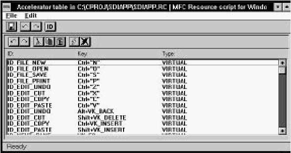 [Figure 27-11 The Accelerator Table editor The Accelerator Table editor displays a list of accelerator IDs and associated key combinations. To create and delete accelerators, use the New and Delete commands in the Edit menu. You can set the ID and key combination of an accelerator in the Property Sheet. Accelerators are usually associated with menu items, and you can create accelerators directly from the Menu editor. For more information, see Chapter 7, "Adding Look and Feel with Resources." File menu commandsThe File menu (see Figure 27-12) contains commands to save the resource file, to edit resource IDs, and to perform other miscellaneous functions.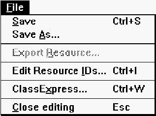 [Figure 27-12 Accelerator Table editor File menu SaveSaves the resource file. If the file is unnamed, this command executes Save As.Save AsOpens a Windows File Save As dialog box, which can be used to save the resource file under a new name.Edit Resource IDsOpens the Resource ID Browser dialog box, used to browse and modify resource IDs. For more information about managing resource IDs and using the Resource ID Browser dialog box, see "Managing Resource IDs," in Chapter 7, "Adding Look and Feel with Resources."ClassExpressRuns ClassExpress, passing the filename of the resource file as the project that ClassExpress should open. This command is only enabled if the Accelerator Table editor is running in the right pane of the Browser window.Close EditingCloses the Accelerator Table editor.Edit menu commandsThe Edit menu (see Figure 27-13) contains standard editing commands. You can undo operations, and can cut, copy, paste, add, and delete accelerators.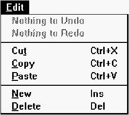 [Figure 27-13 Accelerator Table editor Edit menu UndoUndoes the last Accelerator Table editor operation.RedoRedoes the last Accelerator Table editor operation that was undone.CutCopies the selected accelerator to the Clipboard, then deletes it from the table.CopyCopies the selected accelerator to the Clipboard.PasteCopies the accelerator in the Clipboard into the table.NewAdds a new accelerator to the table.DeleteDeletes the selected accelerator from the table.Toolbar commandsThe Accelerator Table editor toolbar (see Figure 27-14) provides quick access to frequently used menu commands.
[Figure 27-14 Accelerator Table editor toolbar
Accelerator propertiesAccelerator properties are shown in Figure 27-15.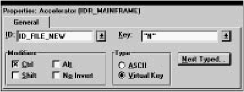 [Figure 27-15 Accelerator properties The accelerator key combination can be set by clicking on Next Typed, then pressing the key combination. The Key, Type, and Modifiers options are set automatically. String Table EditorThe String Table editor (see Figure 27-16) is used to edit string tables.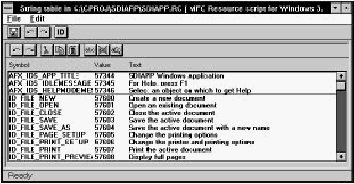 [Figure 27-16 The String Table editor The String Table editor displays a list of IDs and associated text. To create and delete strings, use the New and Delete commands in the Edit menu. You can set the ID and text of a string in the Property Sheet. Although they can be used for any purpose, strings are commonly used to display information about menu commands. You can create strings associated with menu items directly from the Menu editor. For more information, see Chapter 7, "Adding Look and Feel with Resources." File menu commandsThe File menu (see Figure 27-17) contains commands to save the resource file, to edit resource IDs, and to perform other miscellaneous functions.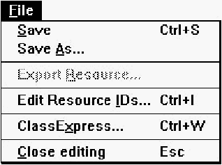 [Figure 27-17 String Table editor File menu SaveSaves the resource file. If the file is unnamed, this command executes Save As.Save AsOpens a Windows File Save As dialog box, which can be used to save the resource file under a new name.Edit Resource IDsOpens the Resource ID Browser dialog box, used to browse and modify resource IDs. For more information about managing resource IDs and using the Resource ID Browser dialog box, see "Managing Resource IDs," in Chapter 7, "Adding Look and Feel with Resources."ClassExpressRuns ClassExpress, passing the filename of the resource file as the project that ClassExpress should open. This command is only enabled if the String Table editor is running in the right pane of the Browser window.Close EditingCloses the String Table editor.Edit menu commandsThe Edit menu (see Figure 27-18) contains standard editing commands. You can undo operations, and can cut, copy, paste, add, and delete strings. The find commands can help you to locate particular strings in large tables.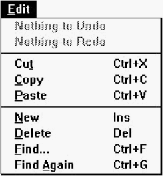 [Figure 27-18 String Table editor Edit menu UndoUndoes the last String Table editor operation.RedoRedoes the last String Table editor operation that was undone.CutCopies the selected string to the Clipboard, then deletes it from the table.CopyCopies the selected string to the Clipboard.PasteCopies the string in the Clipboard into the table.NewAdds a new string to the table.DeleteDeletes the selected string from the table.FindOpens the Find String dialog box (see Figure 27-19). This dialog box is used to locate a string containing particular text.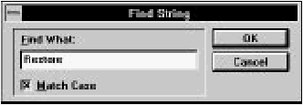 [Figure 27-19 Find String dialog box Type the search text into the Find What textbox. Select Match Case to make the search case sensitive. When you click OK, the String Table editor locates the first occurrence of the text in the string table. Find AgainFinds the next occurrence of the search text, starting from the currently selected string.Toolbar commandsThe String Table editor toolbar (see Figure 27-20) provides quick access to frequently used menu commands.
[Figure 27-20 String Table editor toolbar
String propertiesString properties are shown in Figure 27-21.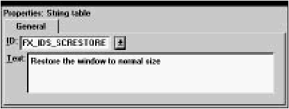 [Figure 27-21 String properties
Enter the string in the Text textbox. You can insert tabs and carriage
returns by typing Ctrl+Tab and Ctrl+Enter, respectively. You can also
use \t to represent a tab and \n for a carriage return.
|